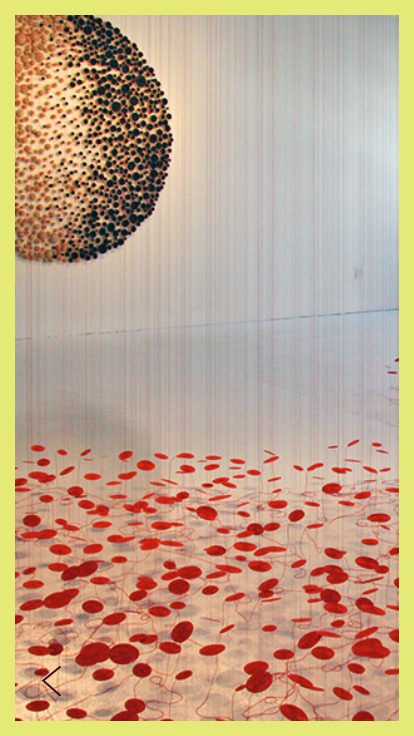
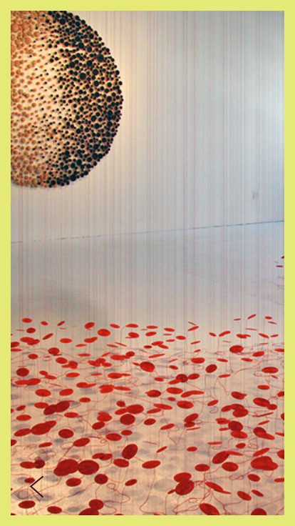

Thefork is an online restaurant booking application which offers discounts and other services related to booking a restaurant table digitally. The aim of our redesign was to make it easy for the user to quickly book a table and to assist the user to find their preferred choices of place, taste and atmosphere as smoothly and quickly as possible.
Below you'll find three of our userflows for thefork.


The aim of this project was to improve
the user experience of buying a pair of
glasses with a prescription, via RayBan's
site.
Before, it was hard for the user to
understand the different steps of the flow.
RayBan also wanted to be able to provide the
customers with feedback regarding availability
of glasses based on the information provided
in the prescription.
To the right you'll see the outcome of our new,
improved prescription flow where all the above
requirements are met. The design of visuals and layout are
following their current line of design to maintain the site's
overall standardizations.


A mobile application for a tradefare of arts and crafts held by the brand
Anantaya in order to strengthening their communication and identity.

 
